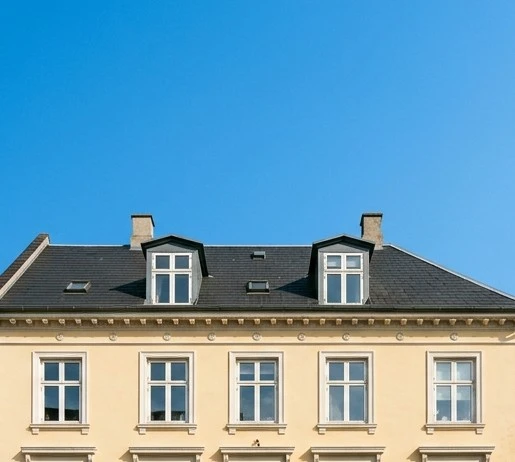
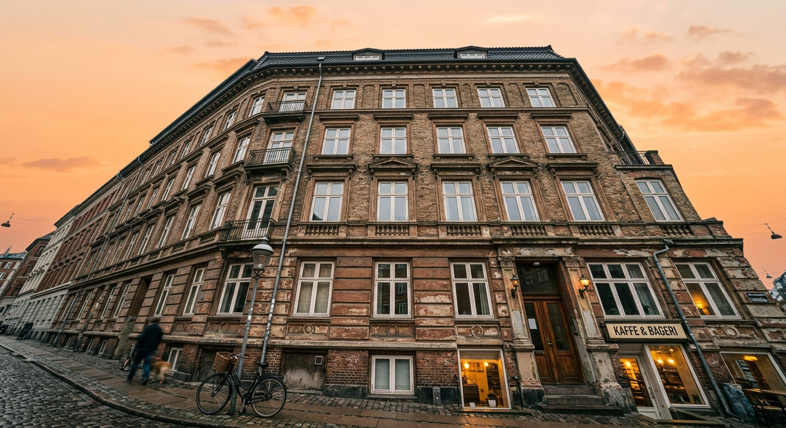
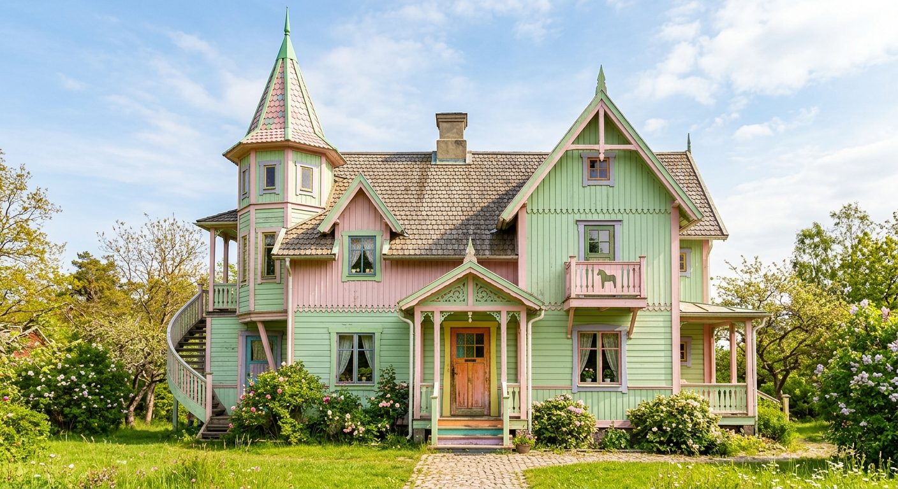
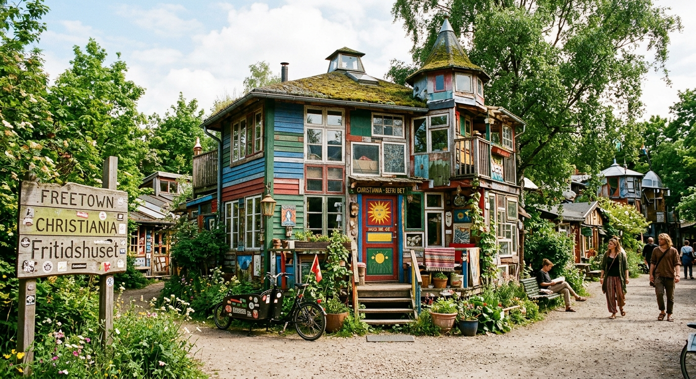
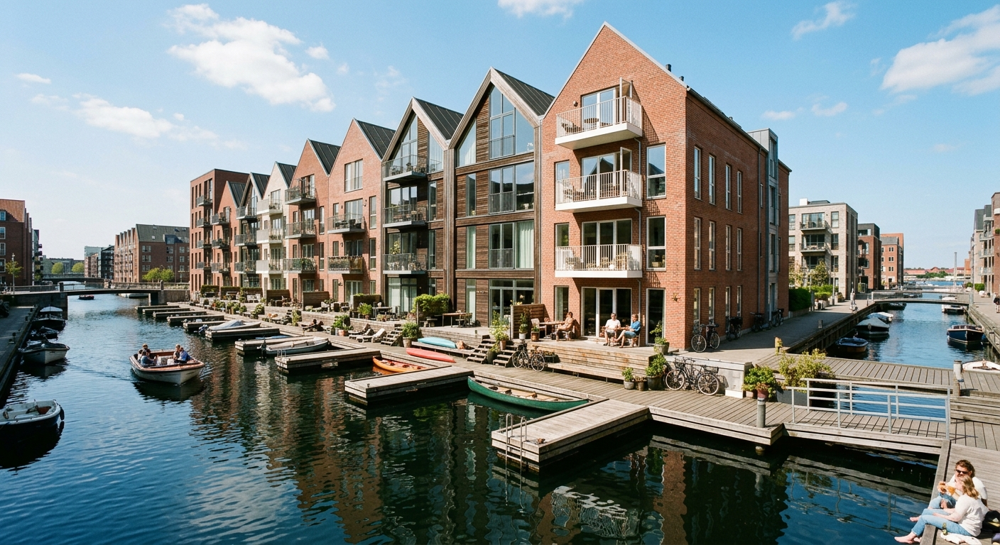

HVORDAN BOR EN KØBEHAVNERE?

TYPER AF BOLIG
Ejerbolig
En ejerbolig er en bolig, man selv køber og ejer. Man betaler typisk for boligen med egne penge og et boliglån i banken. Som ejer skal man selv betale udgifter til blandt andet vedligeholdelse, forsikring og forskellige skatter. Til gengæld bestemmer man selv meget over boligen og kan sælge den igen, hvis man ønsker det. Ejerboliger kan for eksempel være lejligheder, rækkehuse eller villaer.
Lejebolig
En lejebolig er en bolig, man lejer af en udlejer i stedet for selv at eje den. Man betaler en fast husleje hver måned og kan bo i boligen, så længe lejekontrakten gælder. Når man flytter ind, skal man ofte betale et depositum og eventuelt forudbetalt leje.
Andelsbolig
En andelsbolig er en bolig, hvor man køber en andel i en forening, som ejer hele ejendommen. Man får brugsret til en bestemt bolig og betaler hver måned et beløb til foreningen. Prisen på en andelsbolig er ofte anderledes end prisen på en ejerbolig, og der kan være regler for, hvordan boligen må sælges og ændres. Andelsforeningen står blandt andet for vedligeholdelse af ejendommen og fælles udgifter.
VERDENS BEDSTE BY
I 2025 blev København kåret som verdens bedste by, hvilket fremhæver byens særlige kombination af livskvalitet, kultur og bæredygtighed. København er kendt for sine gode cykelmuligheder, grønne områder, hyggelige kvarterer og tætte forbindelse til vandet. Byen har også et levende kulturliv med museer, historiske bygninger, caféer og mange forskellige oplevelser. Samtidig er København en by, hvor gammelt og nyt mødes. Man kan gå gennem de historiske gader og se gamle bygninger, mens moderne arkitektur og nye byområder vokser frem omkring dem. Byens fokus på miljø, cykling og gode offentlige områder er også med til at gøre hverdagen attraktiv. Kåringen i 2025 viser derfor, hvorfor København for mange er et spændende sted at bo, besøge og opleve.

UNIKE MÅDER AT BO PÅ
Christiania
Christiania er et særligt område på Christianshavn i København, som er kendt for sit alternative fællesskab og sin anderledes måde at leve på. Området består blandt andet af boliger, værksteder, caféer og grønne områder. At bo på Christiania er anderledes end at bo i en almindelig lejlighed, fordi fællesskab og fælles ansvar spiller en stor rolle. Beboerne deltager i forskellige opgaver og aktiviteter og er med til at tage beslutninger om området. Christiania har derfor en helt særlig atmosfære, hvor kreativitet, fællesskab og en alternativ livsstil fylder meget.

På/ved havet
I København findes der også mennesker, som bor i husbåde eller rækkehuse tæt på vandet. Det giver en anderledes måde at bo på, hvor man er tæt på havnen og får udsigt til vandet. Husbåde kan være indrettet som almindelige hjem med køkken, stue og værelser, mens rækkehuse ved vandet ofte har terrasser og gode udendørsområder. De er med til at give København et varieret boligliv, hvor man kan bo både midt i byen og helt tæt på vandet.
